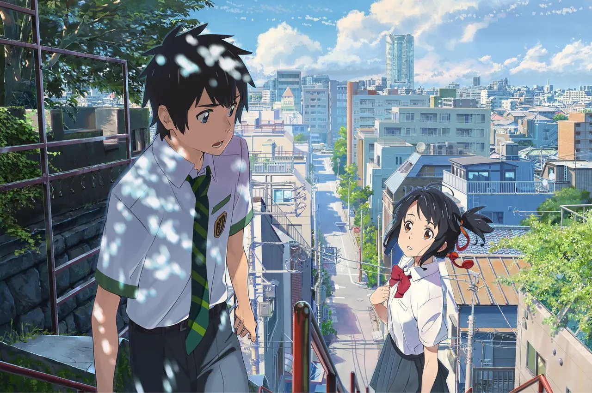

心得及對故事的理解:
這套電影當年在日本獲得年度冠軍,可見如此受別人歡迎，那麼浪漫又令人想幻想的故事，知道人生最殘酷的是死亡,活着卻忘記心愛的人比死亡更殘酷，也知道即使失去重要的人和場所,也要相信自己一定能夠遇見未曾相逢的某樣東西而持續伸出援手的人。我覺得令我最深刻的是被彗星擊中的宮水三葉的身亡，又因為立花瀧而死而復生的後續，令到我覺得死亡對人來說是殘酷的，我希望人可以珍惜自己的一分一秒，不要令自己後悔莫及，有人說人們會每天都會距離死亡，由此可見生命是可貴的，就如蕓花一現。有些人認為這已經是一部在動畫中細膩又無可挑剔，甚至是無懈可擊的劇情了，但卻也有人認為這部電影離巨作還有一段距離，因為確實有些畫面是比較不合理的，但如果要用合理性來講求一部動畫電影的話，那會解釋不完，所以我認為這已經可以算是現代動畫電影的天花板了。
